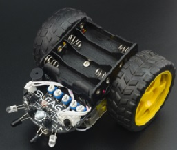

CARRO ROBOT
Se presenta un vehículo robótico terrestre de cuatro ruedas para hacer recorridos sistemáticos de manera autónoma, con un algoritmo de navegación basado en la información de un compás electrónico y un codificador óptico. También cuenta con un sensor ultrasónico para evitar colisiones con objetos en la ruta del vehículo. Por medio de un panel de control con una interfaz gráfica de usuario (GUI), programada en una asistente digital personal (PDA), se trasmiten al vehículo una serie de puntos que forman el recorrido deseado. Los puntos se marcan en un espacio virtual en la GUI que representa la zona de trabajo del vehículo. La comunicación entre el robot y el panel de control, es un enlace bidireccional de radiofrecuencia mediante radio módems que permiten el intercambio de información.
El vehículo robótico puede ser teleoperado de manera manual, en este caso la PDA se convierte en un control remoto convencional. El cambio de modo entre autónomo y manual puede hacerse en cualquier momento.
Una aplicación del vehículo robótico es para analizar la factibilidad de un algoritmo de navegación basado en información redundante de dos sistemas de posicionamiento global (GPS). El vehículo se probó por medio de tareas de recorrido predefinidas en modo autónomo, así como recorridos controlados por un operador. Los resultados muestran que la arquitectura implementada es confiable, robusta y sirve para realizar recorridos sistemáticos en diversas aplicaciones.